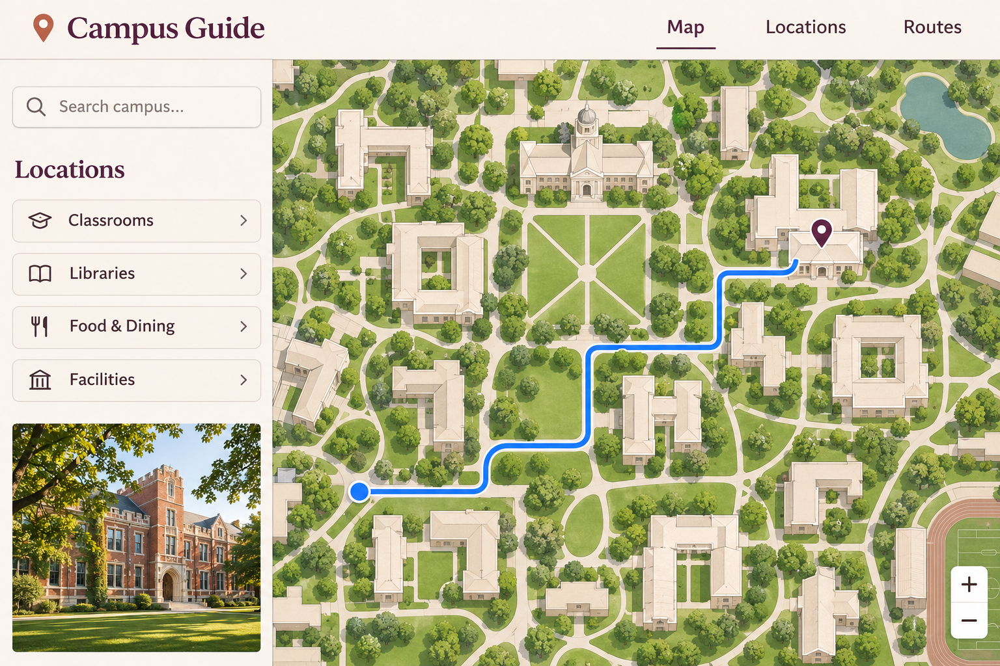
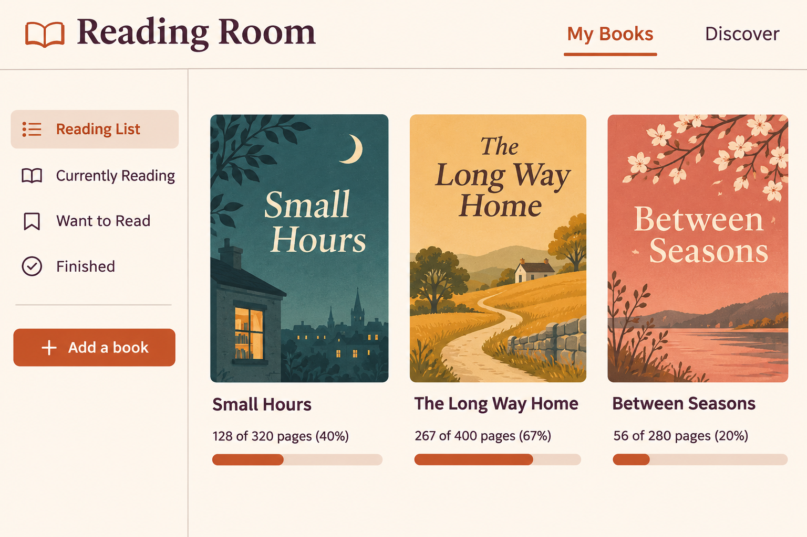
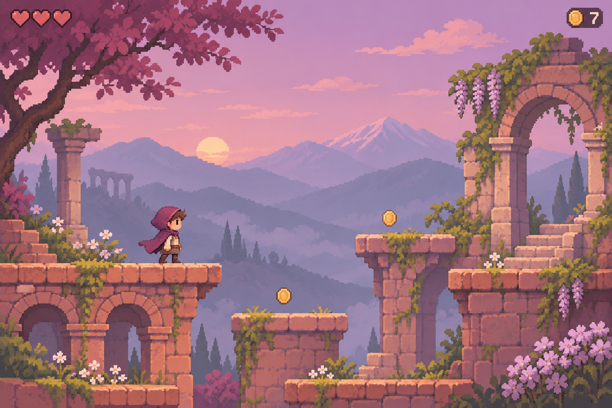

Featured project
Sample conceptCampus Guide
A better way to find your way around campus.
Looking for a frontend developerGood ideas deserve another chapter
A place for unfinished projects and the people who see what they could become.

Featured project
Sample conceptA better way to find your way around campus.
Looking for a frontend developerFind a small next step worth taking.
Sample projects
3 projects
Help finish the mobile navigation.
A campus map concept that helps students find classrooms, libraries, and places to eat.
What exists: a desktop interface concept.
Next step: design and build navigation that works on small screens.
Skills: HTML, CSS, JavaScript.
Illustrative sample. This is not a live contribution listing.

DesignAdd search to a growing book collection.
A quiet personal library concept for keeping track of books and reading progress.
What exists: reading-list and bookshelf screen concepts.
Next step: design a book search screen, including its empty and no-results states.
Skills: interface design, HTML, CSS.
Illustrative sample. This is not a live contribution listing.

GamesBuild the last level of a small adventure.
A pixel platformer concept about exploring a forgotten mountain garden.
What exists: an environment and gameplay visual concept.
Next step: plan the final level with a clear start, a simple puzzle, and an ending.
Skills: level design, pixel art.
Illustrative sample. This is not a live contribution listing.
The next chapter
See how an unfinished idea can grow when someone adds a useful next step.
Illustrative example · Reading Room
Both creators stay credited. This sample illustrates a continuation; the search preview is not a working book search.
01
Explore unfinished ideas across design, development, games, and more.
02
Share your plan and ask the original creator for permission to continue.
03
Build on the original work, keeping both creators credited.